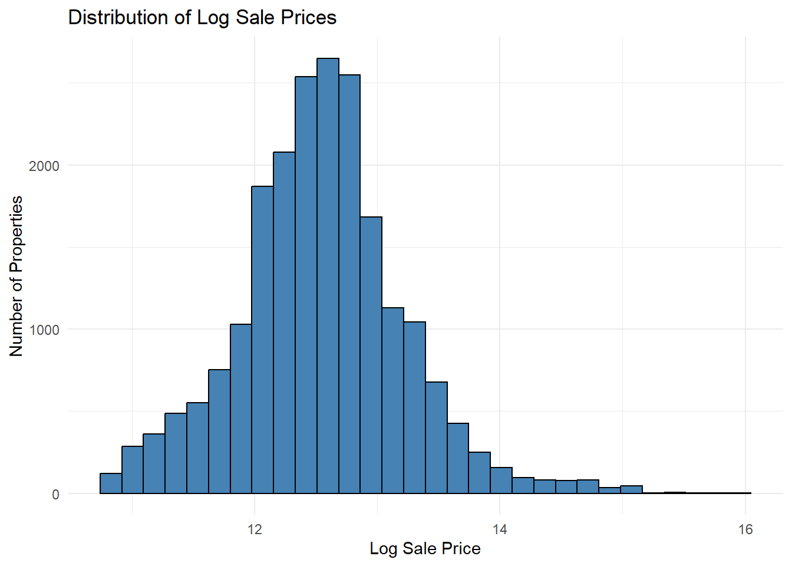
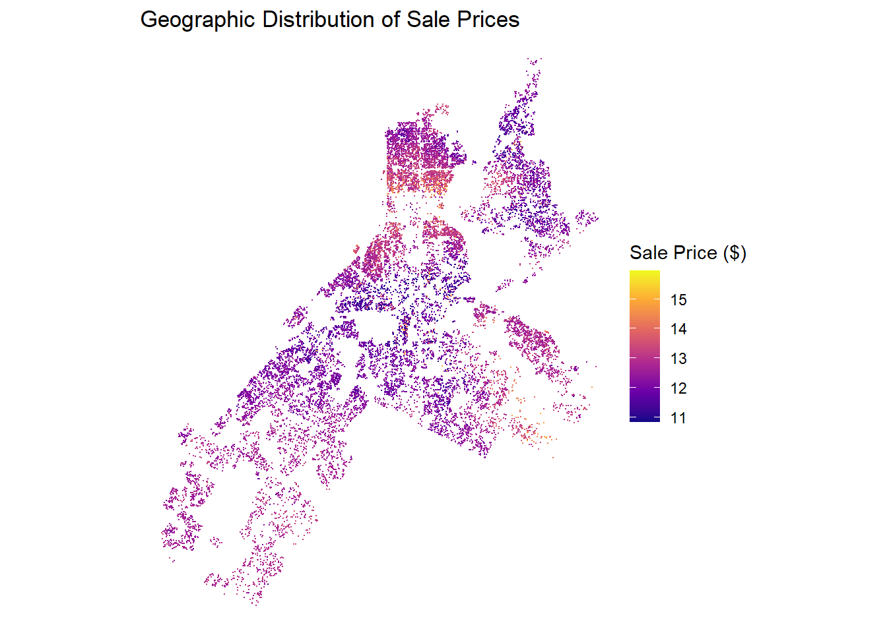
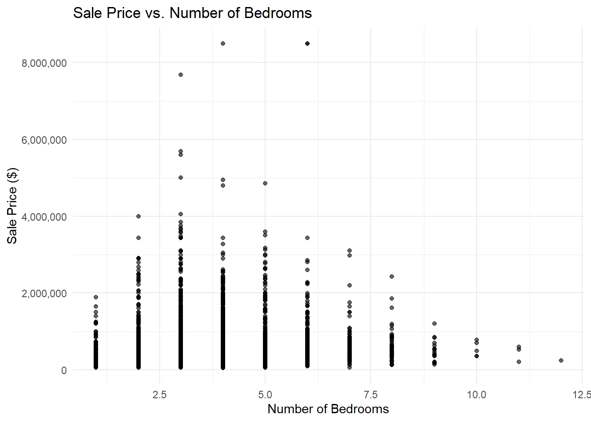
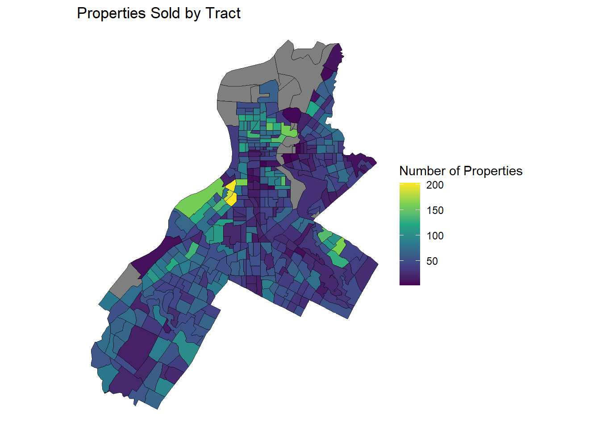

Midterm Challenge: Philadelphia Housing Price Prediction
MUSA 5080 - Public Policy Analytics
Overview
Due Date: Mar 16, 2026, 11:59PM
In-Class Presentations: March 17, 2026 (5 minutes per team)
Weight: 15% of final grade
Team: You’ll work with your table-mates as a team. Feel free to delegate. Everyone should upload their final products onto their own portfolio websites. Be sure to acknowledge your team-mates.
Submission Format:
Presentation Slides (.qmd → revealjs, ~10-15 slides) - Main deliverable (see my weekly lecture notes for inspiration on how to make slides!)
Technical Appendix (.qmd → HTML document) - Supporting details
The Challenge
You are consultancy (please name your consultancy) competing to win the bid to work for a project for the Philadelphia Office of Property Assessment. The city wants to improve its Automated Valuation Model (AVM) for property tax assessments. Your task is to build a predictive model for residential sale prices and present your findings to city officials in a 5-minute briefing.
Deliverables:
Presentation slides (10-15 slides MAX) - Your main findings for stakeholders
Technical appendix (HTML document) - All code, diagnostics, and detailed analysis
5-minute in-class presentation - Deliver your slides on March 17
Your goal: Predict 2023-2024 home sale prices accurately while communicating findings clearly to a policy audience.
Content: ~10-15 (could be less!!) slides covering: 1. Research question & motivation (1-2 slides) 2. Data overview (1 slide) 3. Key visualizations (2-3 slides) 4. Model comparison results (1-2 slides) 5. Main findings (2-3 slides) 6. Policy recommendations (1-2 slides)
Audience: City officials who don’t know R or care about the nitty gritty of stats. They just want the best estimates possible.
No code in these slides - just polished visualizations and key takeaways
Part B: Technical Appendix (Supporting Documentation)
Format: Quarto HTML document
Example YAML:
---title:"Philadelphia Housing Model - Technical Appendix"author:"Your Name"format:html:code-fold: showtoc:truetoc-location: lefttheme: cosmo---
Content: All the technical details: - Complete data cleaning code - All EDA visualizations - Feature engineering code - Full model outputs - Diagnostic plots - Detailed interpretations
Audience: Data scientists and technical reviewers
All code visible - this is where you show your work
── Conflicts ────────────────────────────────────────── tidyverse_conflicts() ──
✖ dplyr::filter() masks stats::filter()
✖ dplyr::lag() masks stats::lag()
ℹ Use the conflicted package (<http://conflicted.r-lib.org/>) to force all conflicts to become errors
Code
library(tidycensus)library(tigris)
To enable caching of data, set `options(tigris_use_cache = TRUE)`
in your R script or .Rprofile.
Code
library(MASS)
Attaching package: 'MASS'
The following object is masked from 'package:dplyr':
select
Code
library(dplyr)library(scales)
Attaching package: 'scales'
The following object is masked from 'package:purrr':
discard
The following object is masked from 'package:readr':
col_factor
Code
library(ggplot2)library(caret)
Loading required package: lattice
Attaching package: 'caret'
The following object is masked from 'package:purrr':
lift
Code
library(car)
Loading required package: carData
Attaching package: 'car'
The following object is masked from 'package:dplyr':
recode
The following object is masked from 'package:purrr':
some
Code
library(knitr)library(readr)library(patchwork)
Attaching package: 'patchwork'
The following object is masked from 'package:MASS':
area
Your work should follow this workflow, with results split between presentation and appendix:
Phase 1: Data Preparation (Technical Appendix)
Load and clean Philadelphia sales data:
Filter to residential properties, 2023-2024 sales
Remove obvious errors
Handle missing values
Document all cleaning decisions
Load secondary data:
Census data (tidycensus):
Spatial amenities (OpenDataPhilly)
Join to sales data appropriately
Make sure you have the correct CRS!
Deliverable (Appendix only):
Complete data cleaning code
Summary tables showing before/after dimensions
Narrative explaining decisions
Phase 2: Exploratory Data Analysis
Create at least 5 professional visualizations:
Distribution of sale prices (histogram)
Code
phl_props_filtered <- phl_props_filtered %>%mutate(log_sale_price =log(sale_price))ggplot(phl_props_filtered, aes(x = log_sale_price)) +geom_histogram(bins =30,color ="black",fill ="steelblue" ) +labs(title ="Distribution of Log Sale Prices",x ="Log Sale Price",y ="Number of Properties" ) +theme_minimal()

Geographic distribution (map)
Code
ggplot(phl_props_filtered) +geom_sf(aes(color = log_sale_price), size = .001) +scale_color_viridis_c(option ="plasma") +theme_void() +labs(title ="Geographic Distribution of Sale Prices", color ="Sale Price ($)")

Price vs. structural features (scatter plots)
Code
ggplot(phl_props_filtered,aes(x = number_of_bedrooms, y = sale_price)) +geom_point(alpha =0.6, size =1.5) +scale_y_continuous(labels = scales::comma) +theme_minimal() +labs(title ="Sale Price vs. Number of Bedrooms",x ="Number of Bedrooms",y ="Sale Price ($)" )

Price vs. spatial features (scatter plots) **see feature engineering section
One creative visualization
Code
ggplot(tract_analysis) +geom_sf(aes(fill = n_properties)) +scale_fill_viridis_c() +theme_void() +labs(title ="Properties Sold by Tract",fill ="Number of Properties" )

For presentation slides: Select your best 2-3 visualizations that tell a compelling story
For appendix: Include all visualizations with detailed interpretations
Example presentation slide:
## Where Are Expensive Homes in Philadelphia?[Beautiful map showing price patterns]**Key Findings:**- Center City and University City command premium prices- River wards show emerging appreciation- Northeast Philadelphia remains most affordable
Phase 3: Feature Engineering (Technical Appendix)
Create spatial features: (these are examples below, but how you construct your model is up to your team)
Buffer-based features:
Parks within 500ft, 1000ft
Transit stops within 400ft
Schools, crime, etc.
Code
##For our buffer spatial feature, we chose to count the number of trees within a 500 foot radius of each property, since tree cover often correlates to property value. phl_trees <-st_read("C:/Users/Liz/Desktop/y2s2/PPA/crouse/labs/lab_3/data/ppr_tree_inventory_2025.geojson")
Reading layer `ppr_tree_inventory_2025' from data source
`C:\Users\Liz\Desktop\y2s2\PPA\crouse\labs\lab_3\data\ppr_tree_inventory_2025.geojson'
using driver `GeoJSON'
Simple feature collection with 151726 features and 6 fields
Geometry type: POINT
Dimension: XY
Bounding box: xmin: -75.28272 ymin: 39.87498 xmax: -74.95878 ymax: 40.13746
Geodetic CRS: WGS 84
##** TEAM NOTE: I can’t render the following code for this plot #4 in phase 2 bc I only just create tree features here. If someone can think of a way to do it or change it so it can go earlier that would be great
Code
ggplot(prop_buffers_trees,aes(x = n_trees, y = sale_price)) +geom_point(alpha =0.6, size =1.5) +scale_y_continuous(labels = scales::comma) +theme_minimal() +labs(title ="Sale Price vs. Number of Trees in 500ft Radius",x ="Number of Trees",y ="Sale Price ($)" )
k-Nearest Neighbor features:
Average distance to k nearest parks, transit, etc.
Code
##For k-nearest neighbor, we chose to evaluate the distance of each property to the nearest 3, 5, and 10 trees, as this often correlates with property values. schools <-st_read("C:/Users/Liz/Desktop/y2s2/PPA/crouse/labs/lab_3/data/Schools")
Reading layer `Schools' from data source
`C:\Users\Liz\Desktop\y2s2\PPA\crouse\labs\lab_3\data\Schools'
using driver `ESRI Shapefile'
Simple feature collection with 490 features and 14 fields
Geometry type: POINT
Dimension: XY
Bounding box: xmin: -8378628 ymin: 4852555 xmax: -8345686 ymax: 4884813
Projected CRS: WGS 84 / Pseudo-Mercator
Code
schools <- schools %>%st_transform(2722)##Creating the distance matrixschool_dist_matrix <-st_distance(phl_props_filtered, schools)school_dist_matrix <-as.matrix(school_dist_matrix)school_dist_matrix <- units::drop_units(school_dist_matrix)#Performing knn functionschool_knn <-function(school_dist_matrix, k) {apply(school_dist_matrix, 1, function(x) {mean(sort(x)[1:k]) })}# run functionschool_knn_3 <-school_knn(school_dist_matrix, k =3)school_knn_5 <-school_knn(school_dist_matrix, k =5)school_knn_10 <-school_knn(school_dist_matrix, k =10)# attach to datasetphl_props_filtered$school_knn_3 <- school_knn_3phl_props_filtered$school_knn_5 <- school_knn_5phl_props_filtered$school_knn_10 <- school_knn_10##Evaluating resultsphl_props_filtered %>%st_drop_geometry() %>% dplyr::select(school_knn_3) %>%summary()
school_knn_3
Min. : 94.15
1st Qu.: 378.75
Median : 498.28
Mean : 548.55
3rd Qu.: 670.40
Max. :2541.75
NA's :1
Data files OR clear download instructions in appendix
For Teams: Use LastName1_LastName2_Presentation.html
In-Class Presentation (March 17, 2026)
Format: 5 minutes per team
What to present:
Walk through your presentation slides. Choose your team’s spoke’s person or take turns You’ll all stand up there and try to look calm, confident, & collected.
Hit the highlights - research question, key viz, model results, recommendations
Speak to a policy audience (your classmates are pretending to be city officials)
Be ready for 1-2 questions
You are trying to win the bid! Convince the audience of your agency’s work.
Slide 8: Model Performance - Final RMSE: 0.26 (log scale) - Translation: ~26% typical error - Beats baseline by 40%
Slide 9: Hardest to Predict - [Visualization of residuals by neighborhood]
Slide 10: Recommendations
Slide 11: Limitations & Next Steps
Slide 12: Questions? - Thank you - [Contact info]
Tips for Success
Start Early
Data cleaning always takes longer than expected
OpenDataPhilly can be slow to download
Leave time for troubleshooting AND RENDERING!!!
Check Your Work
Organize your file directory from the beginning.
Run your entire .qmd file from scratch with a clean workspace before submitting
Make sure all visualizations display
Check that your narrative flows logically
Frequently Asked Questions
Q: Do I have to create both slides AND an appendix?
A: Yes! Slides are your main deliverable (present findings). Appendix proves you did the work correctly.
Q: Can code appear in my presentation slides?
A: NO! Slides are for city officials. All code goes in the technical appendix.
Q: How many slides should I have?
A: 10-15 maximum. Quality over quantity. Each slide should have a clear purpose.
Q: Can I use a different city?
A: No, everyone uses Philadelphia for comparability.
Q: How do I make my .qmd render as revealjs slides?
A: Use format: revealjs in your YAML (see template above). Test it early! See the .qmd files behind my lecture slides for examples.
Q: My presentation is 8 minutes. Is that okay?
A: NO! You must cut it to 5 minutes. Practice and trim ruthlessly.
Q: Should I include all 5 EDA visualizations in my slides?
A: No! Slides should have your best 2-3 visualizations. Put all 5 in the appendix.
Q: My RMSE is 0.35 in log scale. Is that good?
A: Depends on your data, but 0.25-0.45 is typical for hedonic models. Compare to your baseline or put your data back into dollars!
Q: Should I remove all outliers?
A: No! Only remove obvious errors. Use log transformations to handle legitimate outliers.
Q: What if my code works on my computer but not when I render it?
A: Start fresh, restart R, render in a clean session. Check for hard-coded paths. Be aware that sometimes quarto will point to an error on one line, but actually the error is somewhere else.
Q: Can I use ChatGPT/Claude to write my analysis?
A: You may use AI for debugging code, but NOT for writing your analysis. I want to read your interpretation in your own words.
Q: How formal should my presentation be?
A: Professional but not stuffy. Like you’re briefing a city council member who’s smart but doesn’t know statistics.
Q: What happens if I go over 5 minutes?
A: I’ll politely cut you off and you’ll lose points. Practice with a timer!
Acknowledge how you used AI in your work and which AI you used (For example, Claude helped me today in coming up with a draft of this assignment, but I edited it thoroughly!)